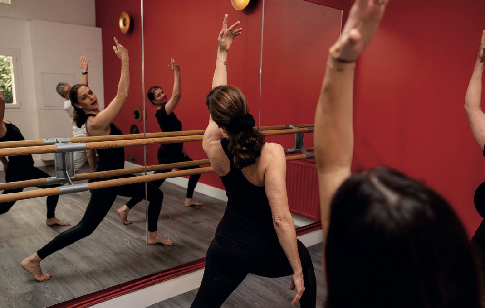

Danse
Chaque matin, 30 min
Des mouvements et des chorégraphies simples, en musique. Chacun est invité à danser et à bouger sur des sons et des rythmes différents pour ressentir le corps et l'élan vital. En chacun de nous sommeille un danseur.